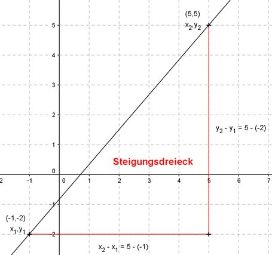

Lineare Funktionen Aufgabe 11 Bestimmen Sie die Steigung m der Geraden, die durch folgende Punkte geht: A(-1|-2); B(5|5)  A (-1|-2) x1 y1 B (5|5) x2 y2 y2 - y1 5 - (-2) 7 m = --------- = --------- = --- x2 - x1 5 - (-1) 6